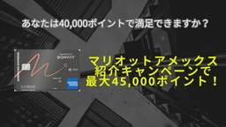

旅中毒
https://www.tabichudoku.com
★旅をお得に優雅にコスパ良く★
フィード

2026年11月デルタアメックスゴールド紹介キャンペーンで41,000マイル！最もお得に申し込む方法とは
旅中毒
こんにちは！旅中毒(@Tabichudoku）です。たび(^з^)-☆です！ 空港ラウンジが好きな方や、スカイチーム加盟の航空券をお得に入手できる「デルタ スカイマイル アメリカン・エキスプレス・ゴールド・カード」 新規…The post 2026年11月デルタアメックスゴールド紹介キャンペーンで41,000マイル！最もお得に申し込む方法とは first appeared on 旅中毒.
10時間前

2026年11月マリオットボンヴォイ紹介で最大＋1万ポイント！紹介のやり方・紹介者ポイントの内訳を徹底解説
旅中毒
こんにちは！旅中毒(@Tabichudoku）です。たび(^з^)-☆です！ マリオットグループホテルにお得宿泊できる『マリオットアメックス』 こちらのカードを作る際、必ず！マリオットボンヴォイ登録（登録料無料）が必要に…The post 2026年11月マリオットボンヴォイ紹介で最大＋1万ポイント！紹介のやり方・紹介者ポイントの内訳を徹底解説 first appeared on 旅中毒.
10時間前
2026年11月☆ANAアメックスゴールド紹介８.5万マイル！最もお得に申し込むキャンペーンとは
旅中毒
こんにちは！旅中毒(@Tabichudoku）です。たび(^з^)-☆です！ ANAマイルが貯まりやすくの特典が受けられる「ANAアメリカン・エキスプレス・ゴールド・カード」 入会する方法は何通りかありますが、どの方法で…The post 2026年11月☆ANAアメックスゴールド紹介８.5万マイル！最もお得に申し込むキャンペーンとは first appeared on 旅中毒.
1日前

2026年11月アメックスビジネスゴールド紹介キャンペーンで180,000ポイント！最もお得に申し込む方法とは
旅中毒
こんにちは！旅中毒(@Tabichudoku）です。たび(^з^)-☆です！ 個人事業主、経営者の方に人気の「 アメリカン・エキスプレス・ビジネス・ゴールドカード」 新規入会をご検討の方にぜひ知ってほしいことがあります。…The post 2026年11月アメックスビジネスゴールド紹介キャンペーンで180,000ポイント！最もお得に申し込む方法とは first appeared on 旅中毒.
1日前

2026年11月マリオットアメックス紹介キャンペーン4.5万ポイント＋α獲得！危険・特典・やり方などを解説
旅中毒
こんにちは！旅中毒(@Tabichudoku）です。たび(^з^)-☆です！ 旅好き、ホテル好きに絶大な人気のマリオットアメックス。 新規入会をご検討の方にぜひ知ってほしいことがあります。 入会する方法は何通りかあります…The post 2026年11月マリオットアメックス紹介キャンペーン4.5万ポイント＋α獲得！危険・特典・やり方などを解説 first appeared on 旅中毒.
2日前
2026年11月アメックスビジネスグリーン紹介キャンペーンで10万ポイント！最もお得に申し込む方法とは
旅中毒
こんにちは！旅中毒(@Tabichudoku）です。たび(^з^)-☆です！ 個人事業主、経営者の方に人気の「 アメリカン・エキスプレス・ビジネス・グリーンカード」 新規入会をご検討の方にぜひ知ってほしいことがあります。…The post 2026年11月アメックスビジネスグリーン紹介キャンペーンで10万ポイント！最もお得に申し込む方法とは first appeared on 旅中毒.
2日前
2026年11月アメックスゴールドプリファード紹介コードで14万ポイント！最もお得に申し込む紹介プログラムとは？
旅中毒
こんにちは！旅中毒(@Tabichudoku）です。たび(^з^)-☆です！ 旅行・ダイニング関連・空港ラウンジやプライオリティパスの無料付帯などの特典が受けられる「アメックス・ゴールド・プリファード」 新規入会をご検討…The post 2026年11月アメックスゴールドプリファード紹介コードで14万ポイント！最もお得に申し込む紹介プログラムとは？ first appeared on 旅中毒.
2日前

カルドローマオートグラフコレクション朝食編⭐︎プラチナ特典で4人分の朝ご飯が無料になるよ〜！
旅中毒
ボンジョルノ！旅中毒(@Tabichudoku）です。たび(^з^)-☆です！ 夏休みに『カルドローマオートグラフコレクション』に泊まってきました。 今回は朝食編。 プラチナ特典で朝食が無料になりました〜！ さらに＋αな…The post カルドローマオートグラフコレクション朝食編⭐︎プラチナ特典で4人分の朝ご飯が無料になるよ〜！ first appeared on 旅中毒.
9日前
8.5万ポイント！マリオットボンヴォイアメックスプレミアム紹介キャンペーン・危険・特典・ポイント・やり方などを解説
旅中毒
お得な特典満載！持っているだけでお得なマリオットボンヴォイアメックス。入会する方法は何通りかあるけど入会方法によってもらえるポイント数が変わってきます。 どの入会キャンペーンで申し込むのがお得なんだろう？ それは2023年3月現在、紹介キャンペーンで入会するのが断然お得☆最大45,000ポイントをゲットする方法とは？The post 8.5万ポイント！マリオットボンヴォイアメックスプレミアム紹介キャンペーン・危険・特典・ポイント・やり方などを解説 first appeared on 旅中毒.
10日前
カルドローマオートグラフコレクション宿泊記★ローマ観光の穴場ホテル！空港やコロッセオへのアクセス・スイート客室・プラチナ特典を徹底レビュー
旅中毒
ボンジョルノ！旅中毒(@Tabichudoku）です。たび(^з^)-☆です！ 夏休みに『カルドローマオートグラフコレクション』に泊まってきました。 少し郊外にあるホテルですが、ゆったりと過ごしつつ観光するのにも比較的便…The post カルドローマオートグラフコレクション宿泊記★ローマ観光の穴場ホテル！空港やコロッセオへのアクセス・スイート客室・プラチナ特典を徹底レビュー first appeared on 旅中毒.
16日前